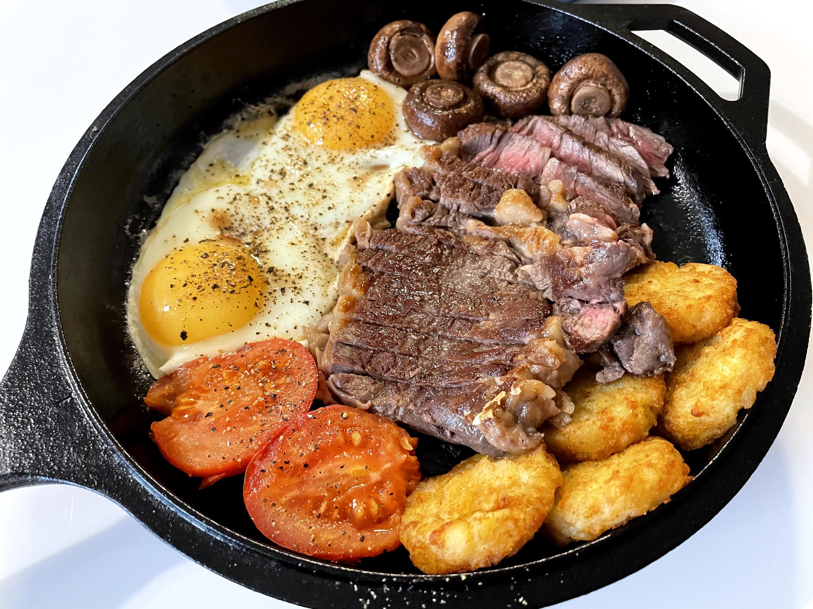

Steak and Eggs

Description
Steak, eggs and toast. Perfect for a weekend brunch!
Ingredients
- 250g or heavier ribeye steak (if your steak is below this weight, skip the oven cooking part)
- 2 eggs
- 1 store-bought hash brown
- 1 tomato cut in half or cherry tomatoes on the vine
- 4-5 brown mushrooms, cleaned and de-stemmed
- ½ tablespoon of butter
Instructions
- Start by baking the hash brown according to the packaging (always go 5 mins longer to get them extra crispy)
- Rub the steak with oil and salt. Let it rest
- Wash and dry mushrooms and tomato
- 3-5 minutes before hash browns are ready, set your pan on high heat
- Once hash brown is taken out, lower the oven temperature to 130ºC
- Place the tomato and mushrooms in the pan along with the steak. Sear both sides of the steak, one minute per side. Season vegetables and add olive oil
- Place in oven for 5-7 minutes (or until it reaches 60ºC for medium), take out the pan and place it on medium heat on the stove. Remove the steak and let it rest
- Add butter and eggs. Fit the hash browns on the side to heat up while cooking
- Season the eggs and take them off of the heat before fully cooked
- Serve with a slice of toasted bread (dark or sourdough bread recommended)